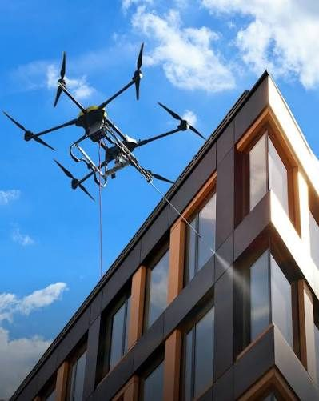

01 — Facade & cladding
Elevations cleaned without touching the building
Render, precast concrete, composite panel, brick and painted surfaces. Low-pressure soft-wash chemistry lifts mould, algae, salt deposit and traffic film without driving water into control joints, window seals or cladding cavities.
Because nothing is anchored, propped or rigged against the structure, there is no facade loading, no anchor point certification and no reinstatement of fixings afterwards.
- — No scaffold, EWP or swing stage mobilisation
- — No road occupancy or footpath closure permits
- — Suitable for occupied and trading buildings
